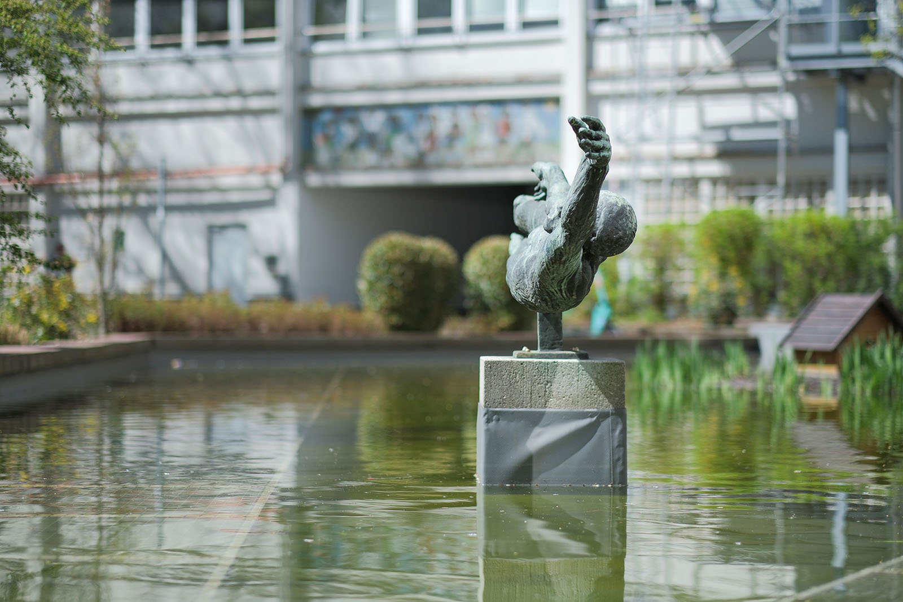
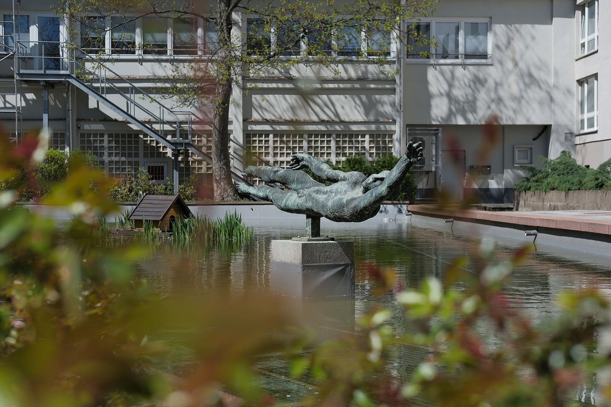
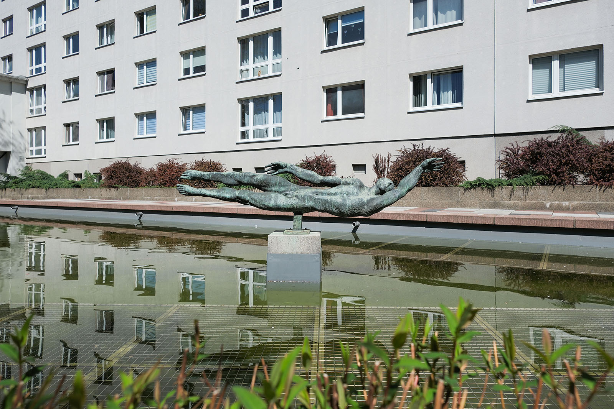
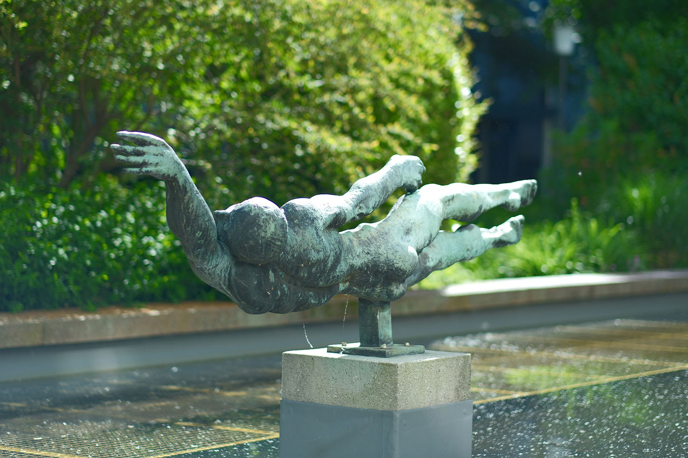
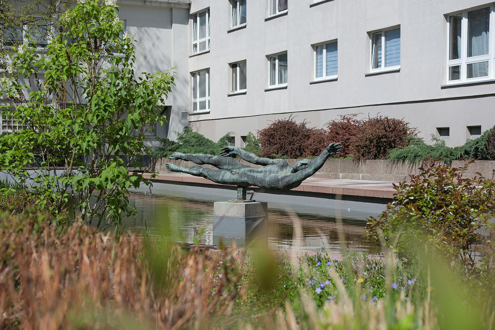

Recherche und Werkbeschreibung: Roman Pilz. Text und Fotografien wechseln sich wie in einem Magazin ab. Ein Klick auf ein Bild öffnet die Großansicht.
Der "Schwimmer" ist die ideale Brunnenplastik – sie verbindet klassische Sujets der Kunst wie den Akt, die Badeszene und den Sport mit ihrem natürlichen Element Wasser. Inspiriert vom Bewegungsablauf des Kraulschwimmens thematisiert Schulze zugleich Körperbeherrschung und Lebensfreude.
Die horizontal gelagerte Figur "schwebt", getragen von einer kurzen, rechteckigen Basis, die kurz über der Hüfte mit dem Körper verbunden ist, über der Wasserfläche. Die Beine liegen eng zusammen und scheinen mit durchgestreckten Füßen dem Wasser möglichst wenig Widerstand leisten zu sollen. Waden und Oberschenkel sind angespannt, aber unbewegt, während die Arme und der Oberkörper den Augenblick einer dynamischen Drehung andeuten.
Der Kult um den Körper
Die Bronzeskulptur „Schwimmer“ (1977) von Johannes Schulze an der Waisenstraße
Kurz bevor der obere Arm wieder nach vorne ins Wasser stürzt, um den Schwimmer durch den Wasserwiderstand nach vorne zu treiben, hebt sich der Kopf über die Wasserfläche, um schnell Luft zu holen. Der Brustkorb hebt sich und bewirkt so eine stark geschmälerte Hüft- und Bauchpartie. Der sehnige Körper wirkt durch den nach vorne gereckten, unteren Arm wie in die Länge gezogen. Beide Körperhälften sind an ihrem Mittelpunkt geschickt ausbalanciert. Der Schwimmer ist seitlich ausgerichtet, wobei die rechte, obere Seite sich mit dem Kopf und Rücken leicht nach hinten wendet.
Obwohl der "Schwimmer" durchaus naturalistisch entworfen ist und eindeutig vom Schwimmen inspiriert ist, kann die Plastik bei näherer Betrachtung einige Fragen aufwerfen: Da die Figur ja notwendig zum Schutz des Materials und besserer Sichtbarkeit in der Luft schweben muss – ist es da nicht eher ein Fliegen, wie im Traum, durch Luftschwaden, das wir präsentiert bekommen?

Oder – stimmt das überhaupt, dass der Arm so locker und so weit nach oben reichen kann, ganz ohne Bodenhaftung, selbst im Wasser? Welche Kräfte sind da im Spiel? Und ist das überhaupt Spiel oder Ernst? Wer weiß schließlich, wie weit das Ufer entfernt ist? Oder ist da nicht vielleicht sogar eine Ähnlichkeit mit den ausdrucksstarken, in ihrer letzten, meist liegenden Haltung erstarrten Toten von Pompeji?
Doch obwohl Hannes Schulze sich bisweilen mit antiken mythologischen Stoffen auseinandersetzte, ist es nicht unbedingt notwendig, 2000 Jahre in der Geschichte zurückzureisen, um geistige Verwandte des "Schwimmers" zu finden. Viel naheliegender ist, dass der Freiberger Künstler ähnliche Entwürfe wichtiger Kollegen aus der DDR wahrnahm und weiterentwickelte. Wilfried Fitzenreiter (1932–2008) schuf beispielsweise bereits 1967 eine "Schwimmerin" für Halle-Neustadt. Besonders bekannt wurde allerdings Wieland Förster (1930) mit seiner "Großen Badenden"

(Große Schwimmerin), die 1971 erstmals auf der Ausstellung "Plastik und Blumen im Treptower Park", einem ähnlichen Freiraum-Ausstellungsformat wie in Karl-Marx-Stadt, ausgestellt wurde. Der weibliche Akt zeigt ähnlich wie Fitzenreiter eine gestreckte, liegende Haltung, ist aber noch viel weniger am Vorgang des Schwimmens als an der Körperlichkeit an sich interessiert. Beide könnten als Pendants zu Hannes Schulzes "Schwimmer" betrachtet werden, der das Thema nun beim männlichen Geschlecht variiert.
Schulze entwarf die Plastik wohl 1976 oder kurz zuvor. Neben dem 1977 entstandenen Bronzeguss, der seit 1979 in Chemnitz steht, wurde 1976 ein Schwimmer als Betonguss angefertigt und vor der jetzigen Grundschule von Jößnitz (heute Stadtteil von Plauen) aufgestellt. Ein "Kleiner Schwimmer" ist auch dokumentiert.

Schulzes Bronze wurde im Rahmen der Ausstellungsreihe "Plastik im Freien", die seit 1968 jährlich in Karl-Marx-Stadt organisiert wurde, ausgewählt und ausgestellt. Regelmäßig wurden bei dieser Ausstellung im Sommer junge und etablierte Künstler zusammen im Stadtraum präsentiert. Der intime Innenhof an der Waisenstraße war dabei der wiederkehrende "Ausstellungsraum" unter freiem Himmel. Später dehnte sich die Ausstellungsfläche auch in den Stadthallenpark oder weitere anlassbezogene Freiflächen aus.
1979 wurden beispielsweise 25 Plastiken gezeigt, von denen allerdings die meisten nur temporär aufgestellt wurden. Einige Plastiken wurden jedoch jedes Jahr von der Stadt angekauft. Der "Schwimmer" war eine solche Erwerbung. Nach dem Ende der Ausstellung wurde die Bronze wohl zunächst wieder abgebaut und 1982 kurz bei einer ähnlichen Freiraumausstellung in einem Teich vor der heutigen Sachsenhalle im ehemaligen Fritz-Heckert aufgestellt. Später kehrte sie wieder an die Waisenstraße zurück. Das Werk ist dort die einzige Plastik, die an authentischem Ort noch an diese langjährige, kulturpolitisch bedeutsame Ausstellungsreihe aus DDR-Zeiten erinnert.

Der Kult um den Körper
Die Bronzeskulptur „Schwimmer“ (1977) von Johannes Schulze an der Waisenstraße
